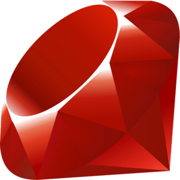

Ruby - 
A linguagem Ruby é conhecida por sua sintaxe elegante e por facilitar a programação produtiva e divertida. Aqui estão alguns aspectos importantes sobre a lógica de programação em Ruby:
1. Sintaxe Simples e Elegante
Ruby tem uma sintaxe clara e legível, o que a torna acessível para iniciantes. Os desenvolvedores costumam elogiar sua facilidade de escrita e leitura.
2. Tipagem Dinâmica
Assim como PHP, Ruby é tipada dinamicamente, permitindo que você declare variáveis sem especificar seu tipo. Isso proporciona flexibilidade, mas também exige cuidado com erros de tipo.
3. Objetos e Orientação a Objetos
Ruby é uma linguagem orientada a objetos pura, o que significa que tudo é um objeto, incluindo números e classes. Isso facilita a modelagem do mundo real e a reutilização de código.
4. Métodos e Bloques
Você pode definir métodos em Ruby para encapsular lógica. A linguagem também suporta blocos, que são pedaços de código que podem ser passados para métodos, permitindo uma programação mais funcional e concisa.
5. Estruturas de Controle
Ruby oferece estruturas de controle como if, unless, case, while, for, e each, permitindo a implementação de lógica condicional e iterações.
6. Manipulação de Arrays e Hashes
Ruby possui estruturas de dados poderosas como arrays e hashes (dicionários), com métodos integrados que facilitam a manipulação e iteração sobre esses dados.
7. Tratamento de Exceções
Ruby tem um sistema robusto de tratamento de exceções, permitindo que você capture e trate erros de maneira eficaz, usando begin, rescue, e ensure.
8. Metaprogramação
Ruby permite metaprogramação, o que significa que você pode escrever código que modifica ou cria novos métodos e classes em tempo de execução, tornando a linguagem extremamente flexível.
9. Frameworks
Ruby é famoso pelo framework Ruby on Rails, que simplifica o desenvolvimento de aplicações web, seguindo a convenção sobre configuração, o que acelera o processo de desenvolvimento.
10. Comunidade e Gemas Ruby tem uma comunidade ativa e uma vasta biblioteca de gemas (bibliotecas) que podem ser facilmente integradas em projetos, expandindo suas funcionalidades.
11. Boa Prática de Codificação
A filosofia de Ruby incentiva boas práticas de codificação, como DRY (Don't Repeat Yourself) e KISS (Keep It Simple, Stupid), promovendo um código mais limpo e manutenível.